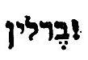
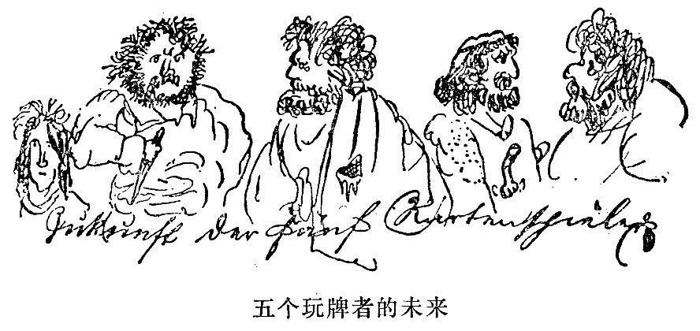

致弗里德里希·格雷培
[1839年2月19日于不来梅]
第一次摘要发表于1913年《新评论》杂志第9期（柏林）；全文发表于《恩格斯早期著作集》1920年柏林版
原文是德文
Et tu，Brute？Friderice Graeber，hoc est res quam nunquam de te crediderim！Tu jocas ad cartas？passionaliter？O Tempores，o moria！Res dignissima memoria！Unde est tua gloria？Wo ist Dein Ruhm und Dein Christentum？Est itum ad Diabolum！Quis est，qui te seduxit？Nonne verbum meum fruxit（hat gefruchtet）？O fili mi，verte，sonst schlag ich Dich mit Rute und Gerte，cartas abandona，fac multa bona，et vitam agas integram，partem recuperabis optimam！Vides amorem meum，ut spiritum faulenzendeum egi ad linguam latinam et dic obstupatus：quinam fecit Angelum ita tollum，nonsensitatis vollum，plenum et，plus ancora viel：hoc fecit enorme Kartenspiel！FN1自己好好想想吧，干坏事的人，想一想你生活的目的是什么！强盗，想一想你在各个方面都在犯罪，不知好歹！纸牌！这是用魔鬼的皮做的。啊，你们这些恶棍！一想到你们我就眼泪汪汪，或者说痛心疾首！哎呀，我身上充满了灵感啦！在1839年第二个月的第十九天，正午时分，因为通常十二点钟用午饭，一阵旋风将我卷起，带向远方，那里我看到他们正在玩牌，而这时正是吃午饭的时候。牌还得继续打下去。这时从东方刮起了一场可怕的雷暴雨，窗玻璃嘎嘎作响，冰雹纷纷落下，可是他们仍然继续玩牌。后来玩得争吵起来了。东方的国王杀向西方的大公，午夜里又是格斗者的一片厮杀声，接着大海的公爵又起来反对东方诸国，于是一场人类空前的大决战就在他的城市前面爆发了。然而，他们还是继续玩牌。终于从天上降下七个神灵。第一个神灵身穿长礼服，他的胡子垂到胸前。他们称他浮士德。第二个神灵的秃顶周围长着一圈白发，他扬言：“哀哉，哀哉，哀哉！”他们叫他李尔。第三个神灵是个高个子，力气很大，他的名字叫华伦斯坦。第四个神灵象亚衲族人的后裔，拿着一根黎巴嫩雪松般的大棒。他们叫他海格立斯。第五个神灵混身如铁打钢铸，他的名字写在他的前额上：齐格弗里特。和他并行的是个强壮的勇士，他的宝剑犹如闪电闪烁着光芒，这是第六个神灵，他叫罗兰。第七个神灵身佩宝剑，把系在剑梢上的头巾当作旗帜在头上挥舞，旗帜上写着：Mio CidFN2。这七个神灵敲了敲玩牌者的门，可是他们不予理睬。终于从午夜里走来了伟大的黎明，它象雄鹰一般掠过整个大地，飞向远方，当它消失的时候，我就再也看不到玩牌者了。但门上画了几个黑色的符号：

FN3。我愣住了。如果说我给威廉的信还不足以证明我怒火万丈，那么我希望现在你们谁都不会再怀疑这一点了。不信的话，我将以更充分的理由使你们相信。

刚才我在《电讯》杂志上看到一篇评论巴门传教士温克勒诗作的文章。236文章痛斥了这些诗，并且大量引用了具有真正传教士风格的一些段落。如果这份杂志到了巴门，谷兹科夫本来就不怎么样的名声在那里将不可收拾。这些段落形象极其恶劣，糟糕透顶，相比之下，保罗倒是个天使。“主耶稣啊，请你治好我的罪恶的血漏吧！”（暗指福音书中一则著名的故事FN4）以及诸如此类的事情。我对巴门越来越感到失望：在文学方面，这是一个没有发展前途的城市。那里所发表的东西，除了讲道稿以外，起码都是些废话；宗教上的东西通常是毫无意思的。难怪人们都把巴门和爱北斐特称为蒙昧主义的和神秘主义的城市；不来梅的名声也是一样，它和那两个城市十分相似；市侩习气同宗教狂热病相结合，在不来梅还要加上卑鄙龌龊的宪法，这些都阻碍着人们精神上的发展。而最主要的障碍之一则是弗·威·克鲁马赫尔。——布兰克非常抱怨爱北斐特的牧师，特别是抱怨科尔和海尔曼；我很想知道是不是这么一回事；他尤其指责他们的作品枯燥无味；照他的说法，只有克鲁马赫尔是个例外。——传教士谈论爱情，说得可笑极了。瞧，我现在也照样诌几句：
尊敬的姑娘！我同尘世罪恶的诱惑作了长期顽强的斗争，
现在向你求爱，万分真诚，
你是否同意和我结成合法的姻亲，
在上帝面前把自己的义务履行！
其实，我并不爱你，这一点根本谈不上，
我爱的是你身上的上帝，他——
不行，诌不出来了；要讽刺这种东西，而又不挖掘这种人的挡箭牌后面最神圣的东西，那是不行的。我倒是想看看这种婚姻：丈夫不爱自己的妻子，却爱自己妻子身上的基督；这里马上就产生一个问题：他是否与化身为自己妻子的基督睡觉？这种荒唐事，我们在圣经中什么地方可以找到呢？在《雅歌》中写道：“我所爱的，你何其美好、何其可悦，使人欢畅喜乐”FN5，可是现在人们无视大卫、索洛蒙以及天晓得是谁，而对肉欲所作的一切辩护进行指责。这使我大为愤怒。况且这些好汉们还自夸掌握了真正的教义，还咒骂任何一个并不怀疑圣经，但是对圣经的解释与他们不同的人。他们干得真不错呀。如果你去找他们中的任何一个人，就说圣经中某节和某节是后来才加进去的，他们立即会攻击你。古斯塔夫·施瓦布是世界上最出色的一个小伙子，他甚至有正统思想，但神秘主义者对他的评价不高，因为他并没有总是用“你说，我是基督教徒”那样的格调唱宗教歌曲，还因为他在一首诗里暗示过唯理论者和神秘主义者之间存在着调和的可能性。至于宗教诗，眼下正濒于灭亡，除非有人给以新的推动，天主教徒象新教徒一样，千篇一律：天主教徒在编写马利亚的赞美诗，新教徒则大唱毫无诗意的老调。多么可憎的抽象概念啊，什么圣化，归正，称义，还有天晓得的什么Loci communesFN6以及种种陈词滥调！对现时的宗教诗的不满情绪，即对宗教的虔诚感情，使得人们怒不可遏。我们的时代难道就这样吝啬，竟找不到一个人能为宗教诗开辟一条崭新的道路？其实我认为，要做到这一点，最合适的方法是我在《风暴》和《佛罗里达》FN7中采用的方法，我请你们仔细地评论一下，否则我就不再寄新诗，勿谓言之不预。武尔姆把信件耽搁了，这是不可饶恕的。
你的 弗里德里希·恩格斯
脚 注
FN1 还有你，布鲁土斯？弗里德里希·格雷培，我从来没有料到你会干这种事！你在玩牌？上瘾了？哦，时代，哦，风尚！最有价值的事是记取教训啊！你的名声何在，你对基督教的信仰何在？都见鬼去吧！是谁把你引入歧途？难道我的话不管用？啊，我的孩子，回心转意吧，否则，我将用鞭子抽你；把牌放下，多做好事，过纯洁的生活吧，那时你将会赢回幸福！我的爱好已经使我懒散的精神转向学习拉丁语，你看到我这种爱好，会吃惊地说，是谁使安琪儿如此怒不可遏？是谁使他头脑里充满愚蠢的想法和其他荒唐的东西？这是漫无节制的牌戏造成的！（信的这一部分是用拉丁文写的，中间插进了一些德文词句，为了押韵起见，某些德文字的词尾是故意写错的。）——编者注
FN2 我是西得。——编者注
FN3 柏林！——编者注
FN4 圣经《新约·路加福音》第8章第43节。——编者注
FN5 圣经《旧约·雅歌》第7章。——编者注
FN6 老生常谈。——编者注
FN7 见本卷第437―442页。——编者注
注 释
236 恩格斯指的是对约·克·弗·温克勒的诗集《竖琴之音》（《Harfenklänge》）的评论。评论载于1838年12月《德意志电讯》杂志第208期，题为《时代的表征》（《Zeichen der Zeit》）。——第449页。